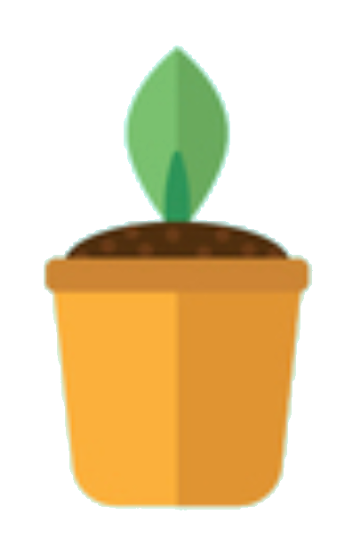

<ion-header>
  <ion-toolbar>
    <ion-title>Let's get <strong>grateful.</strong></ion-title>
    <ion-buttons slot="end">
      <ion-button routerLink="/profile">
        <ion-icon slot="icon-only" name="person"></ion-icon>
      </ion-button>
    </ion-buttons>
  </ion-toolbar>
</ion-header>

<ion-content padding>
  <ion-button expand="block" color="primary" routerLink="/event-create">
    Create new gratitude entry.
  </ion-button>

  <ion-button expand="block" color="primary" routerLink="/event-list">
    See your gratitude timeline.
  </ion-button>

  <ion-card>
    
    <ion-card-header>
      <ion-card-subtitle>Tree Hook Goes here</ion-card-subtitle>
    </ion-card-header>
  </ion-card>
</ion-content>